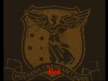

Heyou's Reserach News and Notes
31.Aug.2021
How the Gold Nanorod Was Tempered! Our resreach publication is online!
Our research article has been publised on The Journal of Physical Chemistry C. We are trying to understand the birth of the gold nanorods.
Susanne Seibt, Heyou Zhang, Stephen Mudie, Stephan Förster, and Paul Mulvaney*,Growth of Gold Nanorods: A SAXS Study. The Journal of Physical Chemistry C, 2021 DOI: 10.1021/acs.jpcc.1c06778
Abstract
Using simultaneous, in situ optical spectroscopy and time-resolved, small-angle X-ray scattering (SAXS), we have directly monitored the seeded growth of nearly monodisperse gold nanorods using hydroquinone as the reductant. Growth of the rods is much slower than with the ascorbate ion, allowing the rate of growth along both the longitudinal and transverse directions to be independently determined. The thickness of the stabilizing CTAB layer (3.2 ± 0.3 nm) has also been extracted. We find that increasing the hydrogen tetrachloroaurate(III) concentration produces longer rods, while conversely, increasing the hydroquinone concentration reduces the final aspect ratio. The final number of gold rods is smaller than the initial number of seed particles and decreases in the presence of larger concentrations of HAuCl4. The SAXS data reveal an early transition from a spherical morphology to an ellipsoidal one and then to spherically capped cylinders. The growth curve exhibits at least three distinct regimes: an initial phase comprising spherical seed growth, followed by symmetry breaking and slow elongation. A third phase is marked by rapid rod growth and increases in the aspect ratio. This process is temporally well resolved from the initial symmetry breaking but typically occurs when the rods are around 6 nm in diameter using hydroquinone as the reductant. The results provide qualitative support for the “popcorn model” proposed by Edgar et al. [Formation of Gold Nanorods by a Stochastic “Popcorn” Mechanism. ACS Nano 2012, 6, 1116 1125].
Cite from: DOI: 10.1021/acs.jpcc.1c06778
03.Feb.2021
Our resreach publication is online!
Our research article has been publised on Advanced Functional Materials. This paper is about how to command gold nanorods standing vertically during our EPD assembly method.
Heyou Zhang, Yawei Liu, Muhammad Faris Shahin Shahidan, Calum Kinnear, Fatemeh Maasoumi, Jasper Cadusch, Eser Metin Akinoglu, Timothy D. James, Asaph Widmer-Cooper, Ann Roberts, Paul Mulvaney*,Direct Assembly of Vertically Oriented, Gold Nanorod Arrays. Advanced Functional Materials, 2021, 31, 2006753. DOI: 10.1002/adfm.202006753
Abstract
Although many nanoscale materials such as quantum dots and metallic nanocrystals exhibit size dependent optical properties, it has been difficult to incorporate them into optical or electronic devices because there are currently no methods for precise, large-scale deposition of single nanocrystals. Of particular interest is the need to control the orientation of single nanocrystals since the optical properties are usually strongly anisotropic. Here a method based on electrophoretic deposition (EPD) is reported to precisely assemble vertically oriented, single gold nanorods. It is demonstrated that the orientation of gold nanorods during deposition is controlled by the electric dipole moment induced along the rod by the electric field. Dissipative particle dynamics simulations indicate that the magnitude of this dipole moment is dominated by the polarizability of the solution phase electric double layer around the nanorod. The resulting vertical gold nanorod arrays exhibit reflected colors due to selective excitation of the transverse surface plasmon mode. The EPD method allows assembly of arrays with a density of over one million, visually resolvable, vertical nanorods per square millimeter.
Cite from: DOI: 10.1002/adfm.202006753
01.Jan.2021
 An amazing logo of the University of Melbourne made by gold nanorods array
Catch up with our works in 2018 (Direct Assembly of Large Area Nanoparticle Arrays. ACS Nano, 2018, 12, 8, 7529–7537 DOI: 10.1021/acsnano.8b02932 ), we present a logo of the University of Melbourne constructed by exact 6205 gold nanorods assembled by our diretct EPD assemlby method. Credit to the ability of nanometre level precise control, all gold nanorods are alinged in the same orientation by our diretct EPD assemlby method. Due to the asymmetric optical property of gold nanorod along long and short rod axis, the colour of the logo swith from red to green and back to red dependent on the orientaion of the polariser under dark field microscope.
Copyright reserved.